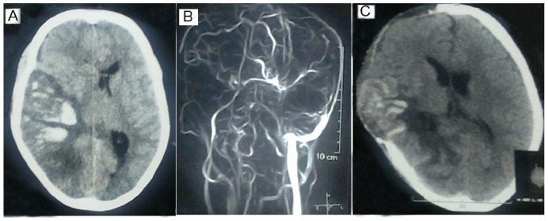
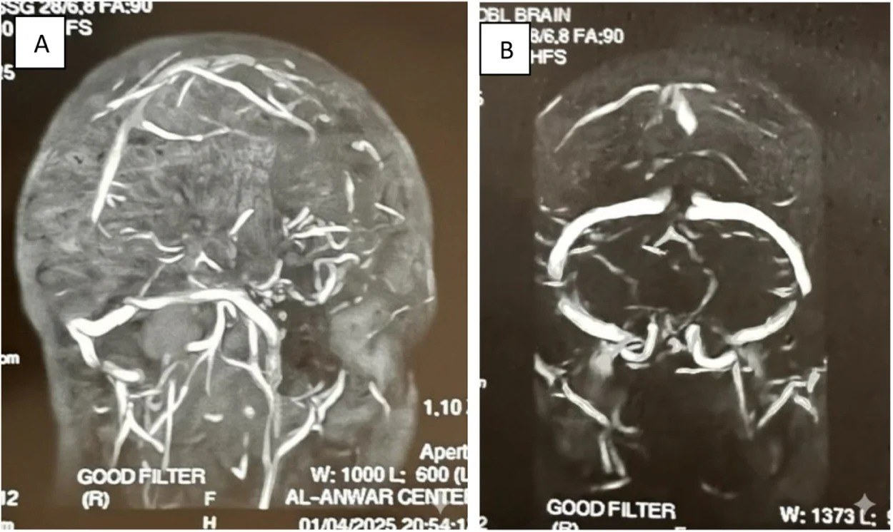

1743 — Huyết khối xoang tĩnh mạch não & tĩnh mạch cảnh trong ở OHSS: đau đầu "khác thường" sau kích thích rụng trứng
Tags: pattern:huyet-khoi-xoang pattern:khuyet-dong-chay pattern:dau-dau-sau-IVF pattern:nhoi-mau-tinh-mach pattern:co-dac-mau vung:nao vung:xoang-tinh-mach vung:buong-trung vung:phan-phu protocol:NCCT protocol:CTV protocol:MRV protocol:MRI-nao score:ASRM-OHSS
Mức chắc chắn (certainty): tổng hợp y văn (literature synthesis) — số liệu dịch tễ và thời điểm lấy từ tổng quan 2025 về huyết khối ở IVF (PMC11856335, CC BY 4.0) và tổng quan 2026 về huyết khối trong hỗ trợ sinh sản (PMC13704087, CC BY 4.0); số liệu chẩn đoán–tiên lượng lấy từ nghiên cứu 97 ca nghi CVT có D-dimer định lượng (PMC13705930, CC BY 4.0), đoàn hệ 98 ca CVT nặng (PMC12072781, CC BY 4.0), ca nguyên văn + tổng quan SSS (PMC13354439, CC BY 4.0) và tổng quan hình ảnh theo vị trí giải phẫu (PMC13588991, CC BY 4.0). Không có ca CVT–OHSS nào có ảnh dùng được giấy phép mở trong lượt này → 2 ảnh minh họa dấu hiệu lấy từ hai bài CVT không–OHSS, ghi rõ nguồn; không gán bệnh sử OHSS cho ảnh của người khác. Con số "7 ca CVST trong y văn OHSS" lấy từ tổng quan ca của Sachar & Rajamani 2016 (PMID 27396697, không có toàn văn mở).
Câu chốt: ở người vừa kích thích rụng trứng, một cơn đau đầu mới, dữ dội hoặc kèm bất thường thần kinh là huyết khối xoang tĩnh mạch não (CVT) cho tới khi loại trừ — không phải "đau đầu do OHSS". CT không cản quang bình thường và D-dimer bình thường đều KHÔNG loại trừ (trong một đoàn hệ, chỉ 89,1% ca có D-dimer âm là thực sự không có CVT — tức NPV 89,1%; âm giả nhiều hơn khi đau đầu đơn thuần kéo dài > 7 ngày — PMC13705930, PMC13354439). Chẩn đoán phải bằng CTV hoặc MRI + MRV, và kháng đông điều trị được khởi động kể cả khi đã có nhồi máu xuất huyết.
1. Tổng quan bệnh học – cơ chế hình ảnh
1.1 Vì sao OHSS tạo huyết khối — tam giác Virchow bị phá cả ba cạnh
- Ứ trệ (stasis): buồng trứng to > 10–12 cm chèn ép tĩnh mạch chậu, cộng với bất động vì đau bụng/cổ trướng → dòng tĩnh mạch chậm. Xoang màng cứng không có van, dòng chảy chậm và không đập, nên huyết khối từ bóng cảnh–xích-ma lan ngược lên xoang ngang rồi xoang dọc trên.
- Tăng đông (hypercoagulability): estrogen cao và hCG làm giảm protein C, protein S, antithrombin, tăng yếu tố VIII và von Willebrand, giảm ADAMTS13; OHSS nặng còn kèm cô đặc máu (Hct > 45%) và tăng VEGF — VEGF vừa gây thoát dịch vừa hoạt hóa nội mô (PMC11856335, PMC13704087).
- Tổn thương nội mô (endothelial injury): thoát mạch và phù mô đệm làm tăng tính thấm, bộc lộ mô dưới nội mô; đây là lý do huyết khối ở OHSS hay xuất hiện ở vị trí bất thường (tĩnh mạch cảnh trong, xoang não, tĩnh mạch tạng) chứ không chỉ chi dưới (PMC11856335).
Ngưỡng và thời điểm cần nhớ:
| Đại lượng | Số liệu | Nguồn |
|---|---|---|
| Huyết khối sau IVF (mọi thể) | ~0,2% chu kỳ; VTE 0,1–0,5%; huyết khối động mạch hiếm hơn | PMC11856335 |
| OHSS trung bình–nặng | 3–8% các chu kỳ IVF thành công | PMC11856335 |
| OHSS làm tăng nguy cơ huyết khối | ~2% theo nguy cơ tuyệt đối | PMC11856335 |
| Thời điểm VTE sau hCG | trung bình 26,6 ngày (huyết khối động mạch ~10 ngày) | PMC11856335 |
| CVT trong dân số chung | 1,3/100.000 người/năm; 0,5–3% mọi đột quỵ người lớn | PMC13705930 |
| CVST trong y văn OHSS | 7 ca được tổng quan (tuổi trung bình 34 ± 4,9) | Sachar & Rajamani 2016, PMID 27396697 |
| Tử vong do huyết khối xoang dọc trên | 4–16%, tùy mức nặng và thời gian đến viện | PMC13354439 |
| CVT phải thở máy | 18,4%; tử vong 27,8%; 90,7% ca sống có kết cục tốt (mRS 0–2) lúc 3 tháng | PMC12072781 |
Suy luận có ghi nhãn: vì VTE trung bình xuất hiện 26,6 ngày sau hCG, cửa sổ nguy cơ không chỉ vài ngày đầu — phải tiếp tục cảnh giác suốt tam cá nguyệt 1 và cho tới khi OHSS thoái lui. Đây là suy luận từ con số trung bình, không phải khuyến cáo hạng A.
1.2 TẠI SAO hình ảnh trông như vậy — vật lý + mô bệnh
| Dấu hiệu | Vì sao có (vật lý/mô bệnh) | Hệ quả thực hành |
|---|---|---|
| Tăng đậm độ trong xoang trên NCCT | Huyết khối co rút, hồng cầu cô đặc → 50–80 HU, trong khi máu đang chảy 30–40 HU; cutoff 61 HU cho Se 77,1% / Sp 92,5%, AUC 0,88 (PMC11813980, PMC13588991) | Dấu hiệu sớm nhưng không nhạy; phải đo HU và so với Hct, động mạch cảnh trong, động mạch nền |
| Dấu "empty delta" trên CTV | Cản quang không vào được lòng xoang bị tắc, nhưng màng cứng quanh xoang vẫn ngấm → tam giác sáng–tối | Thì tĩnh mạch muộn 20–25 giây (xoang hang 45 giây); âm giả nếu chụp quá sớm hoặc huyết khối ngấm thuốc bằng lòng mạch (PMC13588991) |
| Mất tín hiệu trên MRV | Không còn dòng chảy → không có tín hiệu; CE-MRV tốt hơn TOF-MRV cho huyết khối tĩnh mạch vỏ não | TOF có khoảng trống dòng giả (xoang giảm sản, hạt màng nhện, dòng xoáy) — cần ảnh T1/T2 đối chiếu |
| T1 sáng ở giai đoạn bán cấp | Deoxyhemoglobin (cấp, < 3 ngày) đẳng tín hiệu T1, giảm T2; methemoglobin nội bào (bán cấp sớm) → T1 sáng, T2 tối; methemoglobin ngoại bào (bán cấp muộn) → T1 và T2 đều sáng (PMC13588991) | T1 sáng không có ở giờ đầu → MRI sớm có thể âm tính; 3D T1 black-blood giúp thấy huyết khối cấp |
| SWI/T2* "blooming" | Methemoglobin và hemosiderin gây méo từ trường → tín hiệu tối lan rộng | Nhạy với huyết khối tĩnh mạch vỏ não và xuất huyết trong ổ nhồi máu |
| Nhồi máu tĩnh mạch | Áp lực tĩnh mạch tăng → phù vận mạch, rồi phù độc tế bào và xuất huyết; không theo lãnh thổ động mạch | Tổn thương hai bên cạnh đường giữa, đồi thị hai bên (xoang sâu) hoặc vỏ não một vùng — dễ bị đọc thành "đột quỵ động mạch" |
- Vì sao huyết khối xoang sâu nguy hiểm hơn: xoang thẳng và tĩnh mạch não trong dẫn lưu đồi thị–hạch nền; tắc → phù đồi thị hai bên, hôn mê, tiên lượng xấu hơn nhiều so với xoang dọc trên. Trong đoàn hệ 98 ca CVT nặng, 85,7% tổn thương xoang nông, 4,1% xoang sâu, 10,2% cả hai (PMC12072781).
- Vì sao có xuất huyết mà vẫn phải kháng đông: xuất huyết là hậu quả của tắc tĩnh mạch, không phải chống chỉ định; AHA/AHA-ASA khuyến cáo khởi động kháng đông điều trị kể cả khi có nhồi máu xuất huyết, vì lợi ích chống lan huyết khối lớn hơn nguy cơ lan rộng ổ máu (PMC13354439).
2. Mẫu hình + chẩn đoán phân biệt theo vị trí (gamut)
2.1 Theo vị trí xoang — triệu chứng và hình ảnh đi kèm
- Xoang dọc trên (SSS): đau đầu đường giữa, yếu hai chi dưới hoặc yếu nửa người, co giật; nhồi máu hai bên cạnh đường giữa + xuất huyết. Đây là vị trí hay gặp nhất và là nơi "empty delta" dễ thấy nhất.
- Xoang ngang–xích-ma: đau sau tai/cổ, yếu nửa người đối bên, thất ngôn nếu bên trái; huyết khối lan từ tai giữa/viêm xương chũm hoặc từ tĩnh mạch cảnh trong.
- Xoang thẳng – tĩnh mạch não trong (xoang sâu): rối loạn ý thức, hôn mê, co giật, tổn thương đồi thị/hạch nền hai bên; tiên lượng xấu nhất.
- Tĩnh mạch vỏ não đơn thuần: đau đầu + co giật cục bộ, CTV dễ bỏ sót; SWI và T1 black-blood nhạy hơn.
- Tĩnh mạch cảnh trong (IJV): đau/sưng cổ một bên, liệt dây IX–XII (hội chứng Collet–Sicard) khi lan tới bóng cảnh; có thể là nguồn lan lên xoang xích-ma. Siêu âm cổ là bước không được bỏ khi đau đầu kèm đau cổ.
- Xoang hang: đau mắt, lồi mắt, liệt vận nhãn, giảm cảm giác V1–V2; thường do nhiễm trùng vùng mặt–xoang, không điển hình cho OHSS.
2.2 Gamut nguyên nhân ở người sau IVF
- OHSS (bài này): đau bụng + cổ trướng + buồng trứng to + cô đặc máu → huyết khối.
- Thai kỳ sau IVF: tăng đông sinh lý, đỉnh tam cá nguyệt 1 và 6 tuần sau sinh.
- Tăng đông di truyền/mắc phải: yếu tố V Leiden, prothrombin G20210A, thiếu antithrombin, hội chứng kháng phospholipid; lưu ý bằng chứng không đồng nhất — một số nghiên cứu không xác nhận tăng đông di truyền là yếu tố chính ở IVF (PMC11856335).
- Nguyên nhân khác: nhiễm trùng tai–xoang–màng não, chấn thương, u chèn ép xoang, đặt catheter tĩnh mạch cảnh, bất động kéo dài.
2.3 Phân biệt nhanh "đau đầu sau IVF" — 3 câu hỏi tại giường
- Đau đầu có "khác thường" không? Khởi phát đột ngột, đau nhất trong đời, kèm nôn, sốt, co giật, yếu liệt, nhìn mờ, phù gai → phải chụp.
- Có dấu hiệu thần kinh khu trú hoặc rối loạn ý thức không? Có → CVT/xuất huyết/nhồi máu, không chờ D-dimer.
- Có bằng chứng OHSS nặng không? Hct > 45%, creatinin > 1,1 mg/dL, nước tiểu < 30 mL/giờ, cổ trướng lượng nhiều → ngưỡng thấp để chụp và dự phòng.
3. Bảng so sánh phân biệt (ma trận đối chiếu)
| Thực thể (entity) | Hình ảnh điển hình | Chốt vào (rule-in) | Chốt loại (rule-out) | Gợi ý xác nhận |
|---|---|---|---|---|
| CVT do OHSS (bài này) | NCCT: xoang tăng đậm độ 50–80 HU; CTV: khuyết thuốc/empty delta; MRV: mất dòng; MRI: T1 sáng bán cấp, SWI tối | Khuyết thuốc trong lòng xoang + bối cảnh IVF/OHSS + đau đầu mới | Xoang ngấm đều thì tĩnh mạch muộn; không có khuyết thuốc trên CTV/MRV chất lượng tốt | CTV tĩnh mạch muộn 20–25 giây; MRI + CE-MRV; siêu âm cổ tìm IJV |
| Nhồi máu động mạch | Vùng theo lãnh thổ (MCA/ACA/PCA), bờ rõ, không vượt đường giữa; mạch máu lớn tắc trên CTA | Tổn thương theo lãnh thổ + tắc mạch trên CTA | Tổn thương hai bên cạnh đường giữa/đồi thị hai bên → nghĩ tĩnh mạch | CTA/MRA; DWI–ADC; siêu âm tim nếu trẻ |
| PRES | Phù vỏ–dưới vỏ sau hai bên, T2/FLAIR sáng, không theo mạch máu, thường không xuất huyết | Phù đối xứng vùng chẩm–đỉnh + tăng huyết áp/thai sản | Có khuyết thuốc xoang hoặc xuất huyết lớn → không đơn thuần PRES | MRI; MRV loại trừ CVT; theo dõi huyết áp |
| Apoplexy tuyến yên | Khối yên xuất huyết/hoại tử, T1 sáng, đau đầu sau gáy, bán manh hai bên, suy thượng thận cấp | Đau đầu đột ngột + bán manh + cortisol thấp + khối yên xuất huyết | Xoang dọc trên bình thường; không có khuyết thuốc xoang | MRI yên; cortisol/ACTH; nội tiết cấp cứu |
| Viêm màng não/viêm não | Rãnh màng não ngấm thuốc, mủ trong khoang dưới nhện; não bình thường sớm | Sốt + cứng gáy + dịch não tủy viêm | Dịch não tủy vô khuẩn, không sốt → ít nghĩ | Chọc dò dịch não tủy sau khi loại trừ tăng áp lực/tổn thương choán chỗ |
| Đau đầu sau chọc dò/tê tủy | Không tổn thương thực thể; đau tăng khi đứng, giảm khi nằm | Tư thế điển hình + sau chọc dò < 5 ngày | Đau liên tục, không theo tư thế, có dấu thần kinh → không phải | MRI sọ (phù não, tụt hạnh nhân) nếu nặng; không cần CTV |
| Huyết khối IJV đơn thuần | Tĩnh mạch cảnh không xẹp, hồi âm trong lòng, mất dòng Doppler | Khuyết thuốc trong IJV + đau/sưng cổ | IJV xẹp hoàn toàn, dòng bình thường | Siêu âm Doppler cổ; CTV cổ–sọ nếu lan lên |
| Migraine có aura | MRI/CT bình thường; không khuyết thuốc | Tiền sử migraine + đau đầu kiểu cũ, không dấu thần kinh mới | Đau đầu "kiểu khác" hoặc kéo dài > 7 ngày → không quy cho migraine | Chụp khi có red flag; không dùng D-dimer để trấn an |

Nguồn: Journal of Clinical Medicine 2025, Hình 1, PMC12072781, CC BY 4.0. (A, C) CT không cản quang: ổ nhồi máu xuất huyết lớn vùng chẩm–đỉnh phải, xóa rãnh và đè đẩy đường giữa; (B) MRV: mất tín hiệu dòng chảy trong các xoang bị huyết khối. Ảnh minh họa dấu hiệu, không phải ca OHSS.4. Protocol chụp + hệ phân độ/điểm chuẩn hóa
4.1 Khi nào chụp
- Chụp ngay nếu sau kích thích rụng trứng có: đau đầu đột ngột/dữ dội nhất trong đời, đau đầu mới và kéo dài > 7 ngày không đáp ứng giảm đau, nôn tái diễn, co giật, yếu liệt/dị cảm, rối loạn ý thức, nhìn mờ/phù gai, hoặc sốt kèm cứng gáy.
- Ngưỡng thấp khi OHSS nặng: Hct > 45%, creatinin > 1,1 mg/dL, nước tiểu < 30 mL/giờ, cổ trướng nhiều, hoặc có tiền sử huyết khối/tăng đông.
- Không chờ D-dimer để quyết định chụp khi có dấu hiệu thần kinh khu trú. D-dimer định lượng cutoff 0,5 mg/L: Se 90,74%, Sp 95,35%, NPV 89,13%, AUC 0,967; tăng ở 90,7% ca CVT và 4,7% ca không CVT (PMC13705930). NPV 89% nghĩa là còn ~11% âm giả — không đủ để loại trừ.
4.2 Chọn modality
- Bước 1 — NCCT không cản quang: loại trừ xuất huyết não, tìm xoang tăng đậm độ/cord sign (cutoff 61 HU, Se 77,1%/Sp 92,5%) và dấu hiệu tăng áp lực nội sọ. NCCT có thể hoàn toàn bình thường trong CVT.
- Bước 2 — CTV: thì tĩnh mạch muộn 20–25 giây (xoang hang 45 giây), tìm empty delta; nhanh, sẵn có ở cấp cứu, nhưng không dùng khi suy thận nặng/dị ứng cản quang và kém nhạy hơn MRI với huyết khối tĩnh mạch vỏ não.
- Bước 3 — MRI + MRV (ưu tiên nếu có, đặc biệt khi mang thai): T1 black-blood, T2/FLAIR, SWI, DWI/ADC, CE-MRV (tốt hơn TOF-MRV cho tĩnh mạch vỏ não). MRI còn cho thấy nhồi máu/phù/xuất huyết và phân biệt nguyên nhân khác.
- Siêu âm Doppler cổ khi đau/sưng cổ: tìm huyết khối IJV — có thể là nguồn lan lên xoang.
- Theo dõi: chụp lại 3–6 tháng để đánh giá tái thông và phát hiện huyết khối mạn; không chụp lại quá sớm vì huyết khối ngấm thuốc dần có thể trông "đầy" giả.
4.3 Điều trị — phần quyết định của bài
- Kháng đông điều trị ngay khi chẩn đoán: LMWH (enoxaparin 1 mg/kg mỗi 12 giờ hoặc tương đương) là lựa chọn ưu tiên trong thai kỳ/OHSS; khởi động kể cả khi đã có nhồi máu xuất huyết (PMC13354439, PMC13704087).
- Chuyển sang kháng vitamin K (INR 2–3) hoặc DOAC khi ổn định; DOAC không dùng trong thai kỳ/cho bú. Tổng thời gian 3–12 tháng, tùy yếu tố nguy cơ thoáng qua hay tồn tại (PMC13354439).
- Nếu đang mang thai: tiếp tục LMWH suốt thai kỳ và ít nhất 6 tuần sau sinh; phối hợp sản khoa–huyết học (PMC13704087).
- Xử trí OHSS song song: bù thể tích thận trọng, theo dõi Hct/creatinin/nước tiểu, cabergoline 0,5 mg/ngày × 8 ngày, chọc dẫn lưu cổ trướng khi chèn ép hô hấp, dự phòng LMWH liều dự phòng ở OHSS nặng cho tới khi thoái lui (PMC13704087; liều/thời gian chi tiết xem bài 1669).
- Không dùng kháng đông dự phòng thường quy cho mọi chu kỳ IVF — chỉ cá thể hóa theo nguy cơ (PMC13704087).
flowchart TD
A[Đau đầu mới sau kích thích rụng trứng] --> B{Có red flag thần kinh?}
B -->|Có| C[NCCT không cản quang ngay]
B -->|Không| D{Đau đầu khác thường hoặc kéo dài trên 7 ngày?}
D -->|Có| C
D -->|Không| E[Theo dõi sát + điều trị OHSS]
C --> F{Xoang tăng đậm độ hoặc nghi CVT?}
F -->|Có| G[CTV 20-25 giây hoặc MRI + CE-MRV]
F -->|Không| H[MRV/MRI nếu còn nghi ngờ]
G --> I{Khuyết thuốc trong xoang?}
H --> I
I -->|Có| J[LMWH điều trị, kể cả có nhồi máu xuất huyết]
I -->|Không| K[Tìm nguyên nhân khác: PRES, động mạch, nhiễm trùng]
J --> L[Kháng đông 3-12 tháng; thai kỳ: LMWH tới 6 tuần sau sinh]
5. Biến thể bình thường và cạm bẫy
- NCCT bình thường không loại trừ: huyết khối < 3 ngày** có thể **đẳng tín hiệu T1**, xoang chưa kịp tăng đậm độ; **âm tính giả** hay gặp khi huyết khối **một xoang đơn độc** hoặc đau đầu đã **> 7 ngày (PMC13354439, PMC13588991).
- D-dimer bình thường không loại trừ: NPV 89,1% trong đoàn hệ; âm giả tăng khi đau đầu đơn thuần, triệu chứng > 7 ngày, hoặc huyết khối giới hạn một xoang (PMC13705930, PMC13354439). Ca minh họa trong bài nguồn có D-dimer 483 (bài gốc ghi µg/mL, ngưỡng 0–654 — đơn vị thực tế thường dùng là µg/L FEU) nhưng vẫn tắc xoang dọc trên.
- "Khoảng trống" trên MRV TOF không phải huyết khối: hạt màng nhện, xoang giảm sản, dòng xoáy, hoặc thì chụp sớm đều tạo khuyết giả; CE-MRV và ảnh T1/T2 đối chiếu là cách phân biệt (PMC13588991).
- Huyết khối ngấm thuốc muộn: trên thì muộn, lòng xoang có thể ngấm đầy giả che mất huyết khối → luôn so với NCCT và chụp nhiều pha (PMC13588991).
- Nhồi máu hai bên đồi thị: dễ bị đọc là "nhồi máu động mạch nền" hoặc "bệnh não chuyển hóa"; huyết khối xoang sâu là nguyên nhân chữa được — phải xem MRV.
- Xuất huyết trong ổ nhồi máu không phải chống chỉ định kháng đông — chậm kháng đông vì sợ chảy máu là sai lầm chết người (PMC13354439).
- Quy hết đau đầu cho "OHSS" hoặc "migraine": ở người trẻ sau IVF, đau đầu kiểu mới là red flag; đừng để satisfaction of search vì đã có buồng trứng to và cổ trướng.
- Hct bình thường sau truyền dịch: cô đặc máu có thể bị pha loãng giả sau khi truyền — đánh giá xu hướng Hct và creatinin, không dựa một lần xét nghiệm.
6. Tự lượng giá — Blind Quiz
Ca 1 — Nữ 49 tuổi, đau đầu dữ dội 5 ngày, D-dimer 483 (bài gốc ghi µg/mL, ngưỡng 0–654). Nhìn MRV, mô tả trước.

- Gợi ý lâm sàng: đau đầu khởi phát khi thức dậy, kèm cứng gáy, khác hẳn cơn migraine trước đây; không sốt, không yếu liệt.
- Câu hỏi: Dấu hiệu chính trên MRV? Vì sao D-dimer bình thường không loại trừ? 3 chẩn đoán phân biệt và bước tiếp theo?
Bấm để hiện đáp án (findings + chẩn đoán)
- Findings: (A) MRV coronal và (B) axial sau tiêm: khuyết thuốc trong lòng xoang dọc trên — dòng cản quang bị gián đoạn, không thấy tín hiệu trong lòng xoang tại vị trí huyết khối.
- Chẩn đoán: huyết khối xoang dọc trên (CVT). D-dimer 483 µg/L nằm trong ngưỡng nhưng NPV chỉ ~89%; đau đầu đơn thuần kéo dài 5 ngày là đúng cửa sổ âm giả — hình ảnh mới là chốt.
- Phân biệt: migraine có aura, đau đầu sau chọc dò, viêm màng não; khuyết thuốc xoang loại hai bệnh sau, còn migraine không có khuyết thuốc.
- Bước tiếp theo: kháng đông điều trị (LMWH → kháng vitamin K), tìm yếu tố nguy cơ, chụp lại 3–6 tháng.
- Nguồn ảnh: Annals of Medicine and Surgery 2026, Hình 2, PMC13354439, CC BY 4.0.
Ca 2 — CVT nặng: co giật, yếu nửa người, CT có ổ xuất huyết lớn. Có nên kháng đông?
- Gợi ý lâm sàng: bệnh nhân CVT được theo dõi trong đoàn hệ 98 ca (PMC12072781), diễn tiến co giật và rối loạn ý thức, phải thở máy.
- Câu hỏi: Vì sao ổ xuất huyết này là nhồi máu tĩnh mạch chứ không phải xuất huyết tự phát? Có kháng đông không? Nguy cơ tử vong?
Bấm để hiện đáp án (findings + chẩn đoán)
- Findings: CT (A, C): ổ nhồi máu xuất huyết lớn vùng chẩm–đỉnh, phù xung quanh, xóa rãnh, đè đẩy đường giữa; MRV (B): mất tín hiệu dòng chảy trong các xoang bị huyết khối.
- Vì sao tĩnh mạch: xuất huyết không theo lãnh thổ động mạch, vượt đường giữa, kèm phù lan rộng và bằng chứng tắc xoang trên MRV; nhồi máu động mạch thường có bờ theo lãnh thổ và không làm mất dòng xoang.
- Điều trị: vẫn kháng đông điều trị — xuất huyết là hậu quả của tắc tĩnh mạch, không phải chống chỉ định; theo dõi sát và xử trí tăng áp lực nội sọ.
- Tiên lượng: trong đoàn hệ này 18,4% phải thở máy, tử vong 27,8% ở nhóm thở máy; 90,7% ca sống có kết cục tốt lúc 3 tháng — cứu được nếu nhận ra và điều trị sớm.
- Nguồn ảnh: Journal of Clinical Medicine 2025, Hình 1, PMC12072781, CC BY 4.0.
Bài liên quan chéo
- 1669 – Hội chứng quá kích buồng trứng — phân độ ASRM, Hct > 45%, VTE 0,1–0,5%, xử trí OHSS.
- 1742 – Xoắn buồng trứng trên OHSS — đau bụng cấp trên cùng bệnh nhân; đừng bỏ sót huyết khối khi đau đầu.
- 1623 – Huyết khối tĩnh mạch buồng trứng sau sinh — cùng cơ chế ứ trệ–tăng đông ở vùng chậu.
- 1783 – Huyết khối xoang sau chấn thương đầu ở trẻ — cùng dấu hiệu NCCT/CTV, khác bối cảnh.
- 1781 – Huyết khối tĩnh mạch não ở trẻ thiếu máu/huyết tán — mô hình bệnh lý tăng đông tại chỗ.
- 245 – U tuyến yên chảy máu/nhồi máu (pituitary apoplexy) — hàng phân biệt của "đau đầu + bán manh" ở người trẻ.
- 216 – Dị dạng mạch não & huyết khối xoang — tổng quan mạch–xoang và phân biệt AVM.
Không dùng để chẩn đoán độc lập khi chưa có người hướng dẫn.